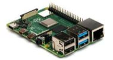
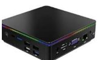
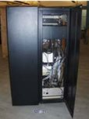
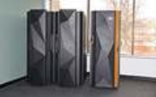
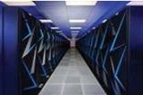

Jenis-Jenis Komputer
Penjelasan
1. Microcomputer (Komputer Mikro)
Komputer mikro merupakan komputer yang memiliki ukuran paling kecil dibandingkan
dengan jenis komputer lainnya dan menggunakan microprocessor sebagai CPU atau unit
pemrosesan utama. Contoh dari komputer mikro antara lain Ultrabook, permainan konsol,
telepon pintar dan Tablet.

2. Komputer Personal (PC, Personal Computer)
Komputer personal atau PC memiliki ukuran yang lebih besar dari komputer mikro dan
memiliki kemampuan penyimpanan dan pengolahan data yang lebih besar dibandingkan dengan
komputer mikro, dan dibuat untuk penggunaan personal. PC dapat berbentuk desktop PC
(dirancang untuk ditaruh di meja), atau untuk dapat dijinjing dan dibawa-bawa
(laptop).
3. Mini PC
Merupakan komputer “peralihan” dari komputer personal ke komputer mini yang dipakai di
industri. Biasanya, dipakai untuk industri kecil atau personal untuk keperluan
profesional atau industri kecil.

4. Minicomputer
Komputer mini berukuran lebih besar, dan mempunyai kapasitas memori maupun pemroses yang
lebih besar. Komputer mini dipakai menunjang kebutuhan pengolahan informasi perusahaan
skala menengah.

5. Komputer Mainframe
Komputer Mainframe berukuran lebih besar dibandingkan dengan komputer dan biasanya
digunakan oleh perusahaan-perusahaan besar sebagai server (peladen).

6. Super Komputer
Supercomputer memiliki ukuran yang paling besar dan memiliki kapasitas pengolahan data
dan kinerja yang paling kuat. Super Komputer memiliki kemampuan untuk melakukan
triliunan perintah atau instruksi per detik yang dapat dihitung dalam FLOPS (Floating
Point Operation per Second). Sama seperti minicomputer dan mainframe, pengguna super
komputer biasanya adalah perusahaan atau organisasi besar, misalnya NASA yang
menggunakannya dalam meluncurkan dan mengendalikan pesawat dan roket.
